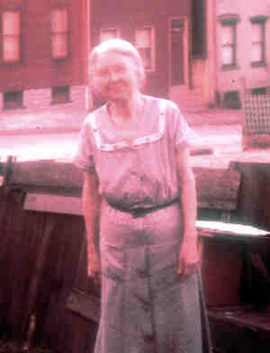

|
|
|
|
|
|
 Margaret HOEY (1880-1971) |
Margaret HOEY
Noted events in her life were: • She appeared in the 1880 census on 8 Jun 1880 in Pittsburgh, Allegheny, PA. 6 • She appeared in the 1900 census on 12 Jun 1900 in Pittsburgh, Allegheny, PA. 7 • She appeared in the 1910 census on 29 Apr 1910 in Pittsburgh, Allegheny, PA. 8 • She appeared in the 1920 census on 22 Jan 1920 in Pittsburgh, Allegheny, PA. 9 • She appeared in the 1930 census on 15 Apr 1930 in Pittsburgh, Allegheny, PA. 10 • She appeared in the 1940 census on 5 Apr 1940 in Pittsburgh, Allegheny, PA. 11 • She appeared in the 1950 census on 6 Apr 1950 in Pittsburgh, Allegheny, PA. 12 |
1 Social Security Administration, Death Master File (http://www.ancestry.com/search/rectype/vital/ssdi/main.htm).
2 Diocese of Pittsburgh, Baptismal Record Extract, St. Agnes Church (Pittsburgh, PA, 8 July 1999).
3 Funeral Home, Mass Card (Obtained from Rosemary (Weet) Hoey).
4 Thomas Hoey, Cemetery Headstone, Calvary Cemetery (Pittsburgh, PA, May 1999).
5 Calvary Cemetery, Cemetery Records (Pittsburgh, PA, 22 Oct 1999).
6 Pennsylvania, Allegheny County, 1880 U.S. Census, Population Schedule (Washington, D.C., National Archives and Records Administration), ED 129, Sheet 27, Line 26.
7 Pennsylvania, Allegheny County, 1900 U.S. Census, Population Schedule (Washington, D.C., National Archives and Records Administration), ED 168, Sheet 13, Line 30.
8 Pennsylvania, Allegheny County, 1910 U.S. Census, Population Schedule (Washington, D.C., National Archives and Records Administration), ED 317, Sheet 16, Line 10.
9 Pennsylvania, Allegheny County, 1920 U.S. Census, Population Schedule (Washington, D.C., National Archives and Records Administration), ED 360, Sheet 12, Line 100.
10 Pennsylvania, Allegheny County, 1930 U.S. Census, Population Schedule (Washington, D.C., National Archives and Records Administration), ED 2-38, Sheet 14, Line 51.
11 Pennsylvania, Allegheny County, 1940 U.S. Census, Population Schedule (Washington, D.C., National Archives and Records Administration), ED 69-63, Sheet 1, Line 42.
12 Pennsylvania, Allegheny County, 1950 U.S. Census, Population Schedule (Washington, D.C., National Archives and Records Administration), ED 77-83, Sheet 2, Line 6.
Home | Irish Roots | Name List